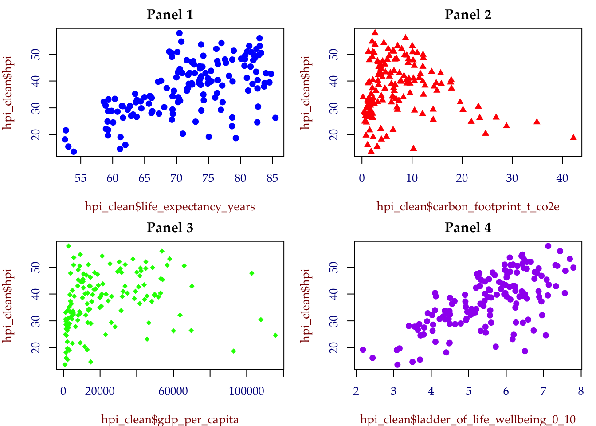
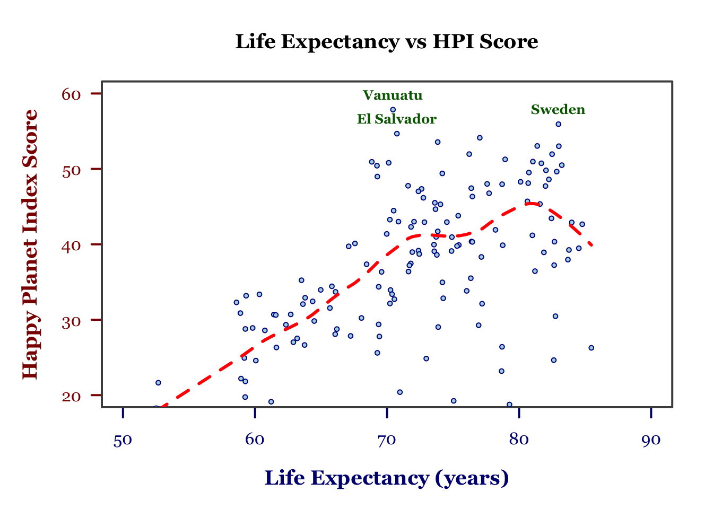
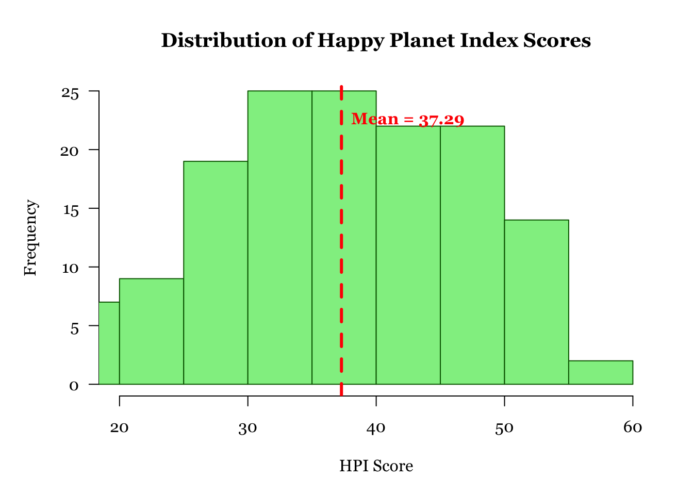
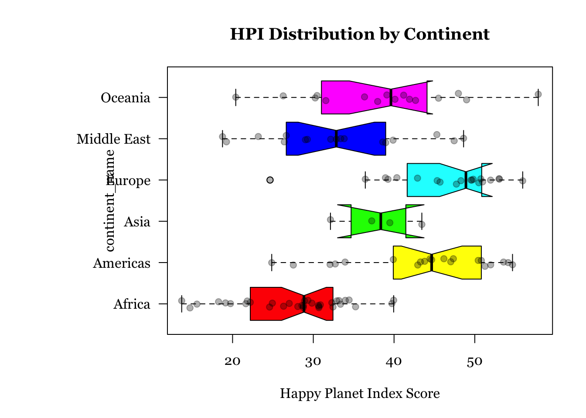
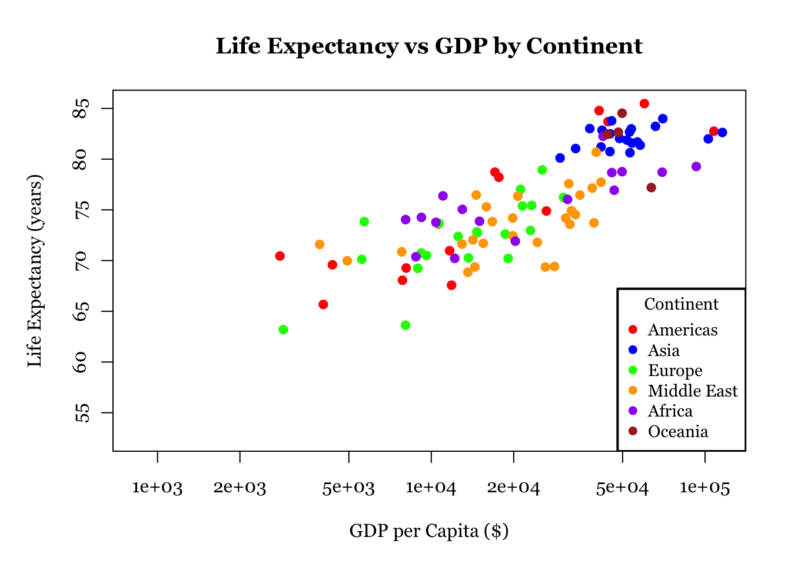
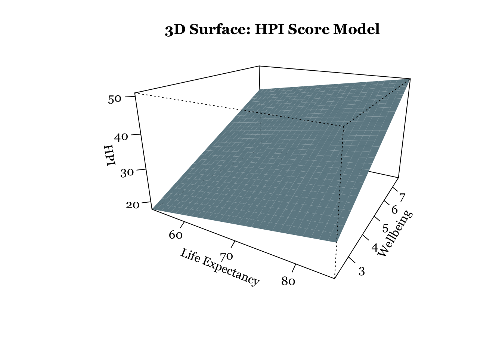
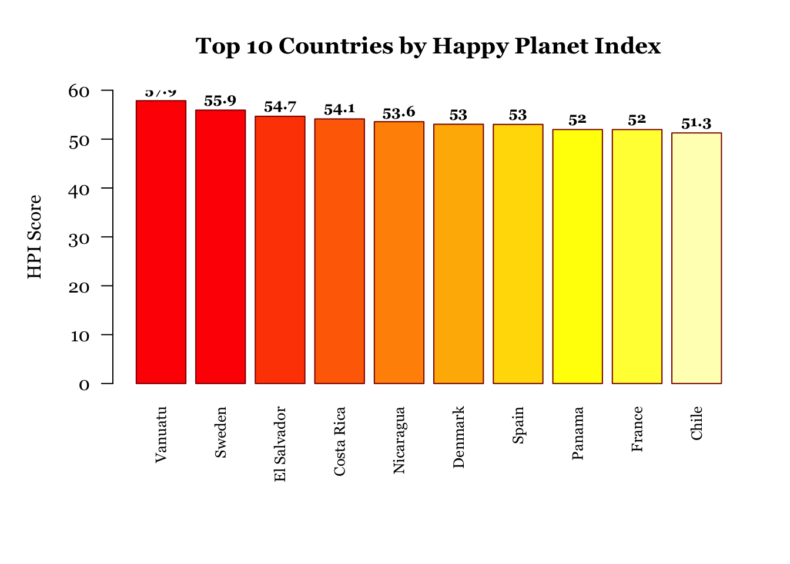
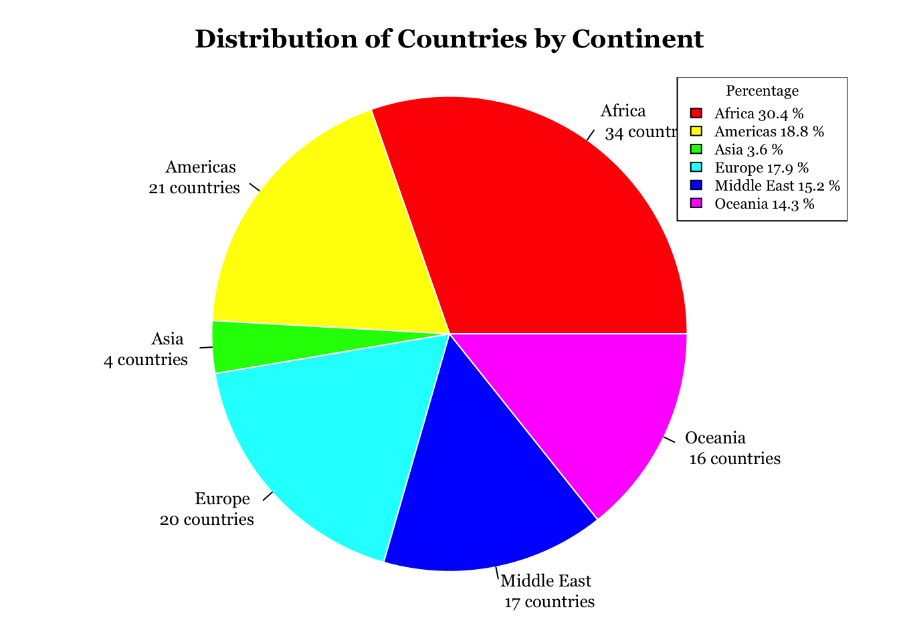
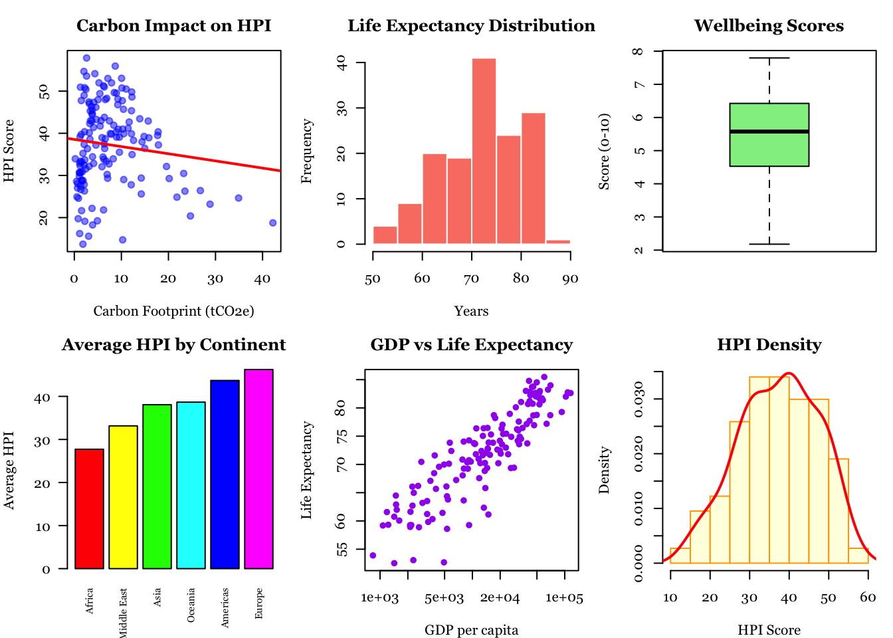

# ============================================================================
# R Graphics Workshop: Happy Planet Index Data Visualization
# Based on Paul Murrell's R Graphics demonstrations
# ============================================================================
#setwd("./_workshop/in-class/RGraphics") # Set your working directory
#getwd()
# Load required libraries
library(readxl)
library(janitor) # For cleaning variable names
Attaching package: 'janitor'The following objects are masked from 'package:stats':
chisq.test, fisher.test# Read the HPI data
hpi_data <- read_excel("/Users/john/Library/Mobile Documents/com~apple~CloudDocs/Home/John/GIS/EPPS6356/Assignments/HPI.xlsx")New names:
• `` -> `...4`hpi_data$...4 # weird name [1] "2021BDI" "2021SDN" "2021VUT" "2021SWE" "2021SLV" "2021CRI" "2021NIC"
[8] "2021DNK" "2021ESP" "2021PAN" "2021FRA" "2021CHL" "2021PRT" "2021MDA"
[15] "2021HND" "2021NLD" "2021NOR" "2021GTM" "2021FIN" "2021ITA" "2021GBR"
[22] "2021ROU" "2021PHL" "2021ISR" "2021GRC" "2021SVN" "2021HRV" "2021THA"
[29] "2021TJK" "2021IRL" "2021DZA" "2021DOM" "2021PER" "2021CZE" "2021ALB"
[36] "2021BRA" "2021DEU" "2021VNM" "2021AUT" "2021MAR" "2021ECU" "2021JAM"
[43] "2021ARG" "2021NZL" "2021MEX" "2021UZB" "2021ARM" "2021HUN" "2021COL"
[50] "2021CHE" "2021JPN" "2021BTN" "2021CHN" "2021MKD" "2021KGZ" "2021TWN"
[57] "2021LTU" "2021SVK" "2021LKA" "2021ISL" "2021POL" "2021IDN" "2021MUS"
[64] "2021URY" "2021BHR" "2021BIH" "2021SEN" "2021AUS" "2021MLT" "2021BGD"
[71] "2021MYS" "2021LVA" "2021LBY" "2021BEL" "2021BLR" "2021TUN" "2021EST"
[78] "2021KOR" "2021BGR" "2021NPL" "2021CAN" "2021GEO" "2021CYP" "2021UKR"
[85] "2021KHM" "2021MNE" "2021COG" "2021SRB" "2021GAB" "2021AZE" "2021ETH"
[92] "2021PRY" "2021TUR" "2021PAK" "2021IRQ" "2021CMR" "2021MOZ" "2021GHA"
[99] "2021JOR" "2021VEN" "2021MRT" "2021CIV" "2021EGY" "2021USA" "2021BOL"
[106] "2021MMR" "2021GIN" "2021UGA" "2021KEN" "2021NER" "2021SGP" "2021LAO"
[113] "2021MDG" "2021KAZ" "2021ZAF" "2021SAU" "2021IRN" "2021BEN" "2021BFA"
[120] "2021TZA" "2021LBR" "2021RWA" "2021IND" "2021RUS" "2021HTI" "2021MWI"
[127] "2021YEM" "2021ARE" "2021TGO" "2021HKG" "2021TKM" "2021COD" "2021TTO"
[134] "2021LUX" "2021SLE" "2021KWT" "2021MLI" "2021NAM" "2021NGA" "2021MNG"
[141] "2021ZWE" "2021LBN" "2021ZMB" "2021QAT" "2021TCD" "2021AFG" "2021LSO"
[148] "2021BWA" "2021CAF"# Rename ...4
colnames(hpi_data)[colnames(hpi_data) == '...4'] <- 'year_cnty'
# Use janitor to clean variable names
# This removes spaces, special characters, and converts to snake_case
hpi_data <- janitor::clean_names(hpi_data)
# Display cleaned names
cat("Cleaned variable names:\n")Cleaned variable names:print(names(hpi_data)) [1] "hpi_rank" "country"
[3] "iso" "year_cnty"
[5] "continent" "population_thousands"
[7] "life_expectancy_years" "ladder_of_life_wellbeing_0_10"
[9] "carbon_footprint_t_co2e" "hpi"
[11] "co2_threshold_for_year_t_co2e" "gdp_per_capita" # Clean the data - remove rows with missing HPI values
hpi_clean <- hpi_data[!is.na(hpi_data$hpi) & hpi_data$hpi != "", ]
# Ensure necessary columns to be numeric
hpi_clean$hpi <- as.numeric(hpi_clean$hpi)
hpi_clean$life_expectancy_years <- as.numeric(hpi_clean$life_expectancy_years)
hpi_clean$ladder_of_life_wellbeing_0_10 <- as.numeric(hpi_clean$ladder_of_life_wellbeing_0_10)
hpi_clean$carbon_footprint_t_co2e <- as.numeric(hpi_clean$carbon_footprint_t_co2e)
hpi_clean$gdp_per_capita <- as.numeric(hpi_clean$gdp_per_capita)
# ============================================================================
# DEMONSTRATION 1: par() - Setting Graphical Parameters
# ============================================================================
# par() allows you to set or query graphical parameters
# Let's create a multi-panel plot
# Save the default parameters
old_par <- par(no.readonly = TRUE)
# Set up a 2x2 plotting area
par(mfrow = c(2, 2), # 2 rows, 2 columns
mar = c(4, 4, 2, 1), # Margins: bottom, left, top, right
bg = "white", # Background color
col.axis = "darkblue", # Axis color
col.lab = "darkred") # Label color
par(family = "Palatino") # Palatino font for text
# Create four simple plots to demonstrate the layout
plot(hpi_clean$life_expectancy_years, hpi_clean$hpi,
main = "Panel 1", pch = 16, col = "blue",cex=1.2)
plot(hpi_clean$carbon_footprint_t_co2e, hpi_clean$hpi,
main = "Panel 2", pch = 17, col = "red")
plot(hpi_clean$gdp_per_capita, hpi_clean$hpi,
main = "Panel 3", pch = 18, col = "green")
plot(hpi_clean$ladder_of_life_wellbeing_0_10, hpi_clean$hpi,
main = "Panel 4", pch = 19, col = "purple")
# Reset parameters
par(old_par)
par(family = "Georgia") # Palatino font for text
# ============================================================================
# DEMONSTRATION 2: Building a Custom Plot with Multiple Functions
# ============================================================================
# We'll create a plot from scratch using plot(), lines(), points(), axis(), box()
# Start with an empty plot
par(mar = c(5, 5, 4, 2))
plot(hpi_clean$life_expectancy_years, hpi_clean$hpi,
type = "n", # 'n' means no plotting - just sets up the axes
xlim = c(50, 90),
ylim = c(20, 60),
xlab = "",
ylab = "",
main = "Life Expectancy vs HPI Score",
axes = FALSE) # We'll add custom axes
# axis() - Add custom axes
# Axis 1 = bottom, 2 = left, 3 = top, 4 = right
axis(1, at = seq(50, 90, by = 10),
col = "navy",
col.axis = "navy",
lwd = 2)
axis(2, at = seq(20, 60, by = 10),
col = "darkred",
col.axis = "darkred",
lwd = 2, # lwd = line width
las = 1) # las=1 makes labels horizontal
# box() - Draw a box around the plot
box(col = "gray30", lwd = 2)
# points() - Add the actual data points
points(hpi_clean$life_expectancy_years, hpi_clean$hpi,
pch = 21, # Filled circles
bg = "lightblue", # Fill color
col = "darkblue", # Border color
cex = .6) # Size
# lines() - Add a trend line (smoothed)
life_exp_sorted <- sort(hpi_clean$life_expectancy_years)
hpi_sorted <- hpi_clean$hpi[order(hpi_clean$life_expectancy_years)]
smooth_line <- lowess(life_exp_sorted, hpi_sorted, f = 0.3)
lines(smooth_line, col = "red", lwd = 3, lty = 2)
# text() - Add text annotations for top 3 countries
top3 <- hpi_clean[order(-hpi_clean$hpi), ][1:3, ]
text(top3$life_expectancy_years, top3$hpi,
labels = top3$country,
pos = 3, # Position: 3 = above
cex = 0.8,
col = "darkgreen",
font = 2) # Bold
# mtext() - Add margin text (axis labels)
mtext("Life Expectancy (years)",
side = 1, # 1 = bottom
line = 3,
col = "navy",
font = 2,
cex = 1.2)
mtext("Happy Planet Index Score",
side = 2, # 2 = left
line = 3,
col = "darkred",
font = 2,
cex = 1.2)
# ============================================================================
# DEMONSTRATION 3: hist() - Histogram
# ============================================================================
par(mar = c(5, 5, 4, 2))
hist(hpi_clean$hpi,
breaks = 15, # Number of bins
col = "lightgreen", # Bar color
border = "darkgreen", # Border color
main = "Distribution of Happy Planet Index Scores",
xlab = "HPI Score",
ylab = "Frequency",
xlim = c(20, 60),
las = 1)
# Add a vertical line for the mean
abline(v = mean(hpi_clean$hpi),
col = "red",
lwd = 3,
lty = 2)
# Add text showing the mean
text(mean(hpi_clean$hpi), max(hist(hpi_clean$hpi, plot = FALSE)$counts) * 0.9,
paste("Mean =", round(mean(hpi_clean$hpi), 2)),
pos = 4,
col = "red",
font = 2)
# ============================================================================
# DEMONSTRATION 4: boxplot() - Box and Whisker Plot
# ============================================================================
par(mar = c(5, 10, 4, 2))
# Create continent labels
continent_names <- c("1" = "Americas", "2" = "Asia", "3" = "Europe",
"4" = "Middle East", "5" = "Africa", "8" = "Oceania")
hpi_clean$continent_name <- continent_names[as.character(hpi_clean$continent)]
# Create boxplot by continent
boxplot(hpi ~ continent_name,
data = hpi_clean,
horizontal = TRUE,
col = rainbow(6),
main = "HPI Distribution by Continent",
xlab = "Happy Planet Index Score",
las = 1,
notch = TRUE) # Notches show confidence intervals for medianWarning in (function (z, notch = FALSE, width = NULL, varwidth = FALSE, : some
notches went outside hinges ('box'): maybe set notch=FALSE# Add points showing the actual data
stripchart(hpi ~ continent_name,
data = hpi_clean,
method = "jitter",
pch = 19,
col = rgb(0, 0, 0, 0.3),
add = TRUE)
# ============================================================================
# DEMONSTRATION 5: legend() - Adding Legends
# ============================================================================
par(mar = c(5, 5, 4, 2))
# Create a scatter plot with different continents in different colors
continents <- unique(hpi_clean$continent)
colors <- c("red", "blue", "green", "orange", "purple", "brown")
plot(hpi_clean$gdp_per_capita, hpi_clean$life_expectancy_years,
type = "n",
xlab = "GDP per Capita ($)",
ylab = "Life Expectancy (years)",
main = "Life Expectancy vs GDP by Continent",
log = "x") # Logarithmic x-axis
# Plot points for each continent
for (i in 1:length(continents)) {
continent_data <- hpi_clean[hpi_clean$continent == continents[i], ]
points(continent_data$gdp_per_capita,
continent_data$life_expectancy_years,
col = colors[i],
pch = 19,
cex = 1)
}
# legend() - Add a legend
continent_labels <- c("Americas", "Asia", "Europe", "Middle East", "Africa", "Oceania")
legend("bottomright",
legend = continent_labels,
col = colors,
pch = 19,
cex = 0.9,
title = "Continent",
bg = "white",
box.lwd = 2)
# ============================================================================
# DEMONSTRATION 6: persp() - 3D Surface Plot
# ============================================================================
# Create a 3D surface showing relationship between three variables
# We'll create a grid and interpolate values
# Select data without missing values
plot_data <- hpi_clean[!is.na(hpi_clean$life_expectancy_years) &
!is.na(hpi_clean$ladder_of_life_wellbeing_0_10) &
!is.na(hpi_clean$carbon_footprint_t_co2e), ]
# Create grid for 3D surface
x <- seq(min(plot_data$life_expectancy_years),
max(plot_data$life_expectancy_years), length = 30)
y <- seq(min(plot_data$ladder_of_life_wellbeing_0_10),
max(plot_data$ladder_of_life_wellbeing_0_10), length = 30)
# Fit a linear model
model <- lm(hpi ~ life_expectancy_years + ladder_of_life_wellbeing_0_10,
data = plot_data)
# Create predictions for each x,y combination
z <- outer(x, y, function(x, y) {
predict(model, newdata = data.frame(
life_expectancy_years = x,
ladder_of_life_wellbeing_0_10 = y
))
})
# persp() - Create 3D perspective plot
persp(x, y, z,
theta = 30, # Rotation angle (horizontal)
phi = 20, # Rotation angle (vertical)
expand = 0.6, # Expansion factor for z-axis
col = "lightblue",
border = NA,
shade = 0.5,
ticktype = "detailed",
xlab = "Life Expectancy",
ylab = "Wellbeing",
zlab = "HPI",
main = "3D Surface: HPI Score Model")
# ============================================================================
# DEMONSTRATION 7: names() - Working with Named Vectors
# ============================================================================
# names() gets or sets the names attribute of an object
# Create a named vector of top 10 countries by HPI
top10 <- hpi_clean[order(-hpi_clean$hpi), ][1:10, ]
hpi_scores <- top10$hpi
names(hpi_scores) <- top10$country
# Display the named vector
print("Top 10 Countries by HPI:")[1] "Top 10 Countries by HPI:"print(hpi_scores) Vanuatu Sweden El Salvador Costa Rica Nicaragua Denmark
57.86116 55.93532 54.67388 54.13215 53.56492 53.04326
Spain Panama France Chile
53.01033 51.96369 51.95615 51.26594 # Create a barplot using the named vector
par(mar = c(8, 5, 4, 2))
barplot(hpi_scores,
las = 2, # Rotate labels
col = heat.colors(10),
main = "Top 10 Countries by Happy Planet Index",
ylab = "HPI Score",
ylim = c(0, 60),
border = "darkred",
cex.names = 0.8)
# Add value labels on top of bars
text(x = seq(0.7, 11.5, by = 1.2),
y = hpi_scores + 2,
labels = round(hpi_scores, 1),
cex = 0.8,
font = 2)
# ============================================================================
# DEMONSTRATION 8: pie() - Pie Chart
# ============================================================================
# Create a pie chart showing distribution of countries by continent
continent_counts <- table(hpi_clean$continent_name)
par(mar = c(2, 2, 3, 2))
pie(continent_counts,
col = rainbow(length(continent_counts)),
main = "Distribution of Countries by Continent",
labels = paste(names(continent_counts), "\n",
continent_counts, "countries"),
cex = 0.8,
border = "white",
radius = 1)
# Add a legend
legend("topright",
legend = paste(names(continent_counts),
round(100 * continent_counts / sum(continent_counts), 1), "%"),
fill = rainbow(length(continent_counts)),
cex = 0.7,
title = "Percentage")
# ============================================================================
# BONUS: Combined Visualization Dashboard
# ============================================================================
# Create a comprehensive dashboard combining multiple plot types
par(mfrow = c(2, 3), mar = c(4, 4, 3, 1))
# 1. Scatter plot with trend line
plot(hpi_clean$carbon_footprint_t_co2e, hpi_clean$hpi,
pch = 19, col = rgb(0, 0, 1, 0.5),
xlab = "Carbon Footprint (tCO2e)",
ylab = "HPI Score",
main = "Carbon Impact on HPI")
abline(lm(hpi ~ carbon_footprint_t_co2e, data = hpi_clean),
col = "red", lwd = 2)
# 2. Histogram
hist(hpi_clean$life_expectancy_years,
col = "salmon", border = "white",
main = "Life Expectancy Distribution",
xlab = "Years")
# 3. Boxplot
boxplot(hpi_clean$ladder_of_life_wellbeing_0_10,
col = "lightgreen",
main = "Wellbeing Scores",
ylab = "Score (0-10)")
# 4. Barplot of continents
barplot(sort(tapply(hpi_clean$hpi, hpi_clean$continent_name, mean)),
col = rainbow(6),
main = "Average HPI by Continent",
las = 2,
cex.names = 0.7,
ylab = "Average HPI")
# 5. Scatter with text
plot(hpi_clean$gdp_per_capita, hpi_clean$life_expectancy_years,
pch = 19, col = "purple", cex = 0.8,
main = "GDP vs Life Expectancy",
xlab = "GDP per capita",
ylab = "Life Expectancy",
log = "x")
# 6. Density plot (using hist with freq=FALSE)
hist(hpi_clean$hpi,
freq = FALSE,
col = "lightyellow",
border = "orange",
main = "HPI Density",
xlab = "HPI Score")
lines(density(hpi_clean$hpi), col = "red", lwd = 2)
# Reset to single plot
par(mfrow = c(1, 1))
# ============================================================================
# Summary Statistics
# ============================================================================
cat("\n=== HAPPY PLANET INDEX DATA SUMMARY ===\n")
=== HAPPY PLANET INDEX DATA SUMMARY ===cat("Total countries analyzed:", nrow(hpi_clean), "\n")Total countries analyzed: 147 cat("Mean HPI Score:", round(mean(hpi_clean$hpi), 2), "\n")Mean HPI Score: 37.29 cat("Median HPI Score:", round(median(hpi_clean$hpi), 2), "\n")Median HPI Score: 38.6 cat("HPI Range:", round(min(hpi_clean$hpi), 2), "-", round(max(hpi_clean$hpi), 2), "\n")HPI Range: 13.7 - 57.86 cat("\nTop 5 Countries:\n")
Top 5 Countries:print(hpi_clean[order(-hpi_clean$hpi), c("country", "hpi")][1:5, ])# A tibble: 5 × 2
country hpi
<chr> <dbl>
1 Vanuatu 57.9
2 Sweden 55.9
3 El Salvador 54.7
4 Costa Rica 54.1
5 Nicaragua 53.6# ============================================================================
# END OF WORKSHOP DEMONSTRATION
# ============================================================================